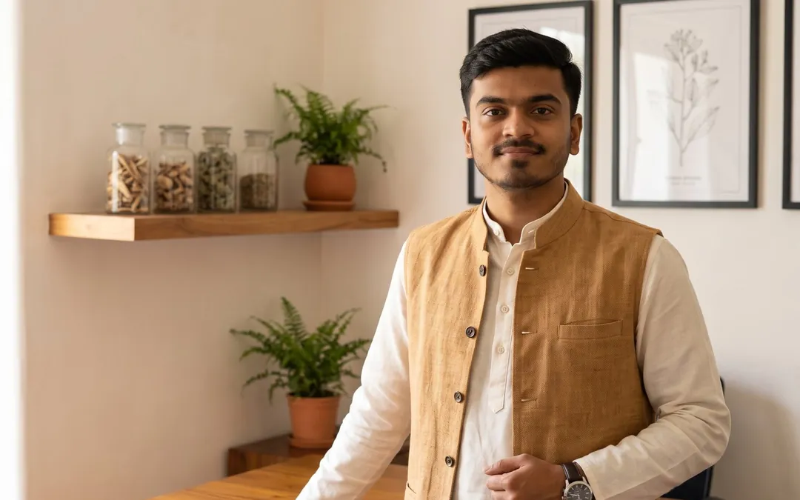
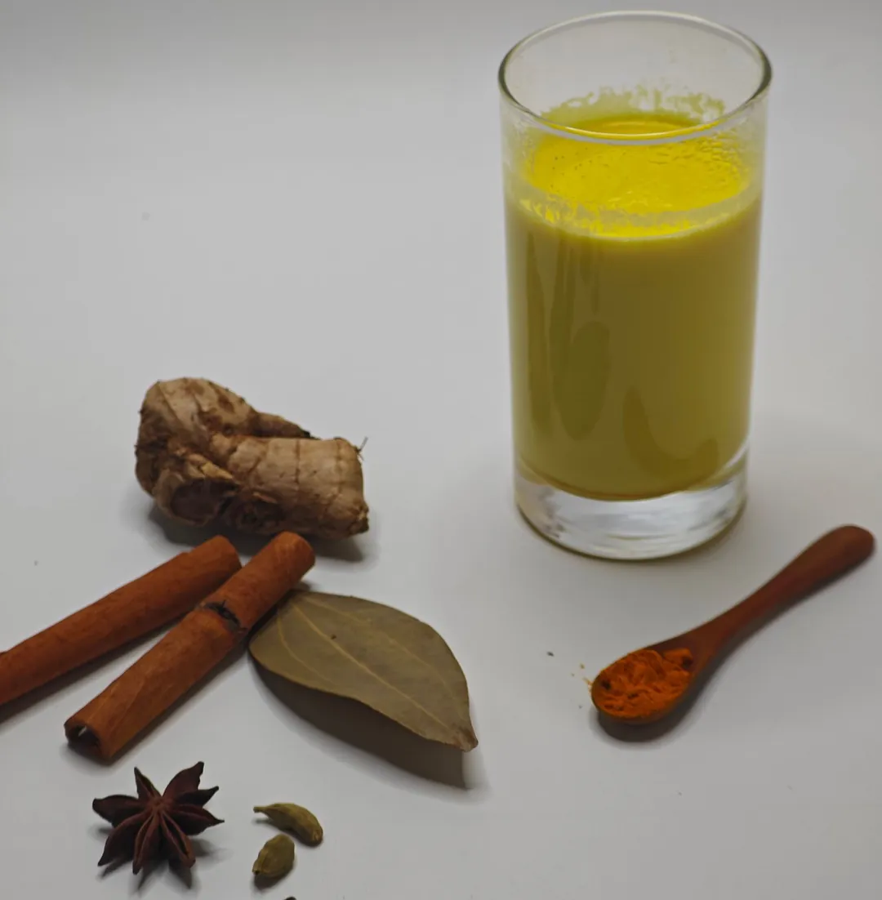
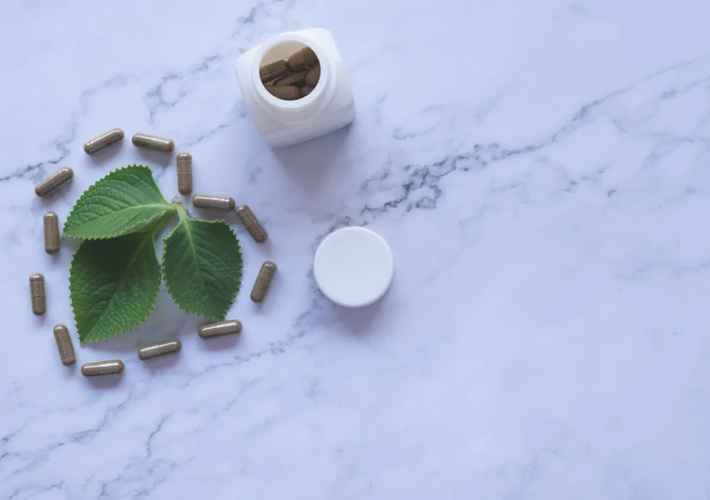
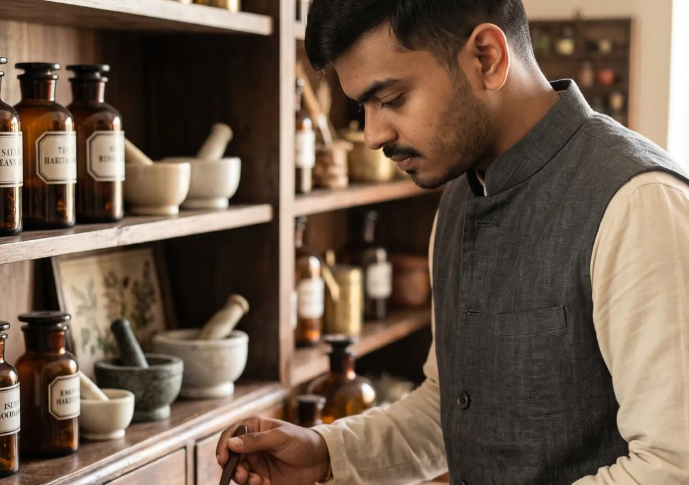

Sabka Ved Wellness is a Panchakarma centre in Patna, led by Dr. Aditya Kunal, BAMS. We practise classical Ayurveda with patience: assess first, treat gently, and explain every step to you and your family.



Classical therapies, prescribed with care.
Careful Ayurveda for Patna families.
A doctor-led centre where every plan is written for one person, explained in plain words and reviewed as you go.
Doctor-led from day one
Classical and unhurried
Honest about limits
What we offer, in plain numbers.
No inflated figures. Just the therapies we practise and the way every programme is structured.
BAMS
Everything around the therapy, not just the therapy.


Plain answers about Panchakarma, from the clinic.
Short reads for Patna families who want to understand Ayurvedic therapy before they book.


Questions families ask before they begin.

Send a request through the appointment page with your preferred date and the therapy you are interested in. Every visit is by appointment, near Bajrang Puri, Patna, and your slot is confirmed directly by the clinic before you travel.
It depends on you. A supportive therapy such as Abhyanga or Shirodhara typically takes 30 to 60 minutes. A full programme with preparation, main therapy and recovery typically runs from about one to three weeks. The exact length is decided after assessment.
Panchakarma is a structured medical procedure, not a spa routine. It is planned only after Dr. Aditya Kunal assesses you, and the intensity is adjusted to your strength. It is not suitable for everyone, which is why no therapy starts without a consultation.
Panchakarma is usually avoided or postponed during pregnancy, acute fever or infection, severe weakness, and in some heart conditions. Young children and frail elders need special care. If you have a serious or ongoing condition, your regular doctor stays in charge of it, and we work alongside, never instead.
No. Never stop or change a prescribed medicine without the doctor who prescribed it. Bring your prescriptions to the consultation so your plan is made around them.
Light, warm, freshly cooked food such as khichdi, moong dal and rice, with warm water through the day. Specific diet instructions are given for each phase, and they matter as much as the therapy itself.